CHUYẾN ĐI HỌC TẬP - TRẢI NGHIỆM CỦA HỌC SINH TRƯỜNG SAO VIỆT TẠI VƯỜN QUỐC GIA KONKAKINH
Sáng 23/4/2021, học sinh lớp 9A1 có chuyến tham quan, học tập và trải nghiệm tại Vườn Quốc gia KonKaKinh nằm ở phía Đông Bắc tỉnh Gia Lai. Vượt gần 55km, đoàn đã đến khu vực KonKaKinh, nơi có đỉnh núi cao nhất trên cao nguyên Pleiku với độ cao 1.748m so với mặt nước biển.
Vườn Quốc gia KonKaKinh phía Bắc giáp tỉnh Kon Tum và một phần xã Đắk Rông; phía Nam giáp xã Hà Ra và một phần xã Ayun; phía Đông giáp một phần xã Đắk Rông, xã Krông, xã Lơ Ku, huyện K’Bang; phía Tây giáp một phần xã Hà Đông.
Bước chân vào cổng khu hành chính Vườn Quốc gia Kon Ka Kinh, đoàn đã được đón tiếp và nghe giới thiệu về sa bàn mô phỏng 42.000 ha diện tích rừng Konkakinh, nhằm giúp các bạn học sinh có cái nhìn tổng thể trước khi đi đến các khu vực chứa tiêu bản để tìm hiểu và thu thập thông tin cho bài thu hoạch của chuyến đi: Đó là hệ động vật rừng đặc hữu cho cả Việt Nam và Đông Dương bao gồm 5 loài thú lớn như (voọc vá chân xám, vượn má hung, hổ, mang Trường Sơn và mang lớn); 7 loài chim như (khướu đầu đen, khướu mỏ dài, khướu kon ka kinh, khướu đầu xám, trèo cây mỏ vàng, gà lôi vằn và thầy chùa đít đỏ)…Trong đó, có nhiều loài quý hiếm có giá trị bảo tồn gen và nghiên cứu khoa học được ghi vào sách Đỏ Việt Nam và thế giới như hổ, voọc ngũ sắc, khỉ đuôi lợn, tê tê Java, cầy tai trắng, gà lôi lông tía, giẻ cùi bụng vàng, các loại khướu, các loại kỳ đà, các loại rắn, cóc mày gai mí, cóc mắt chân dài...Sức hấp dẫn, lôi cuốn của khu Vườn Quốc gia KonKaKinh còn nằm ở hệ thống sông, suối, thác, ghềnh tự nhiên tuyệt đẹp như thác Đak Pooc, suối Knia, Đak Kơ Bưng, thác Đak Pooc, thác 95 nổi tiếng và đẹp nhất có độ cao khoảng 40m.

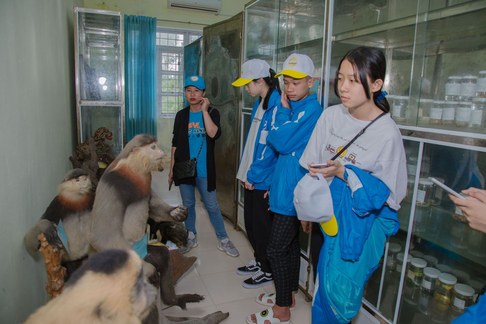
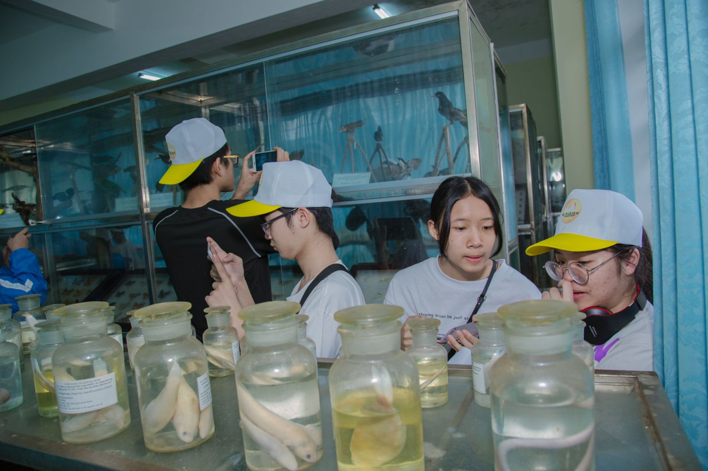
Sau đó cả đoàn di chuyển vào sâu hơn với 4km đường rừng để thấy được chỉ ở KonKaKinh mới có hệ thống rừng đặc dụng của Việt Nam: rừng thường xanh mưa ẩm nhiệt đới; rừng kín lá rộng thường xanh nghèo kiệt, rừng kín thường xanh phục hồi, rừng le, nứa, rừng trồng, đất trống, trảng cỏ…
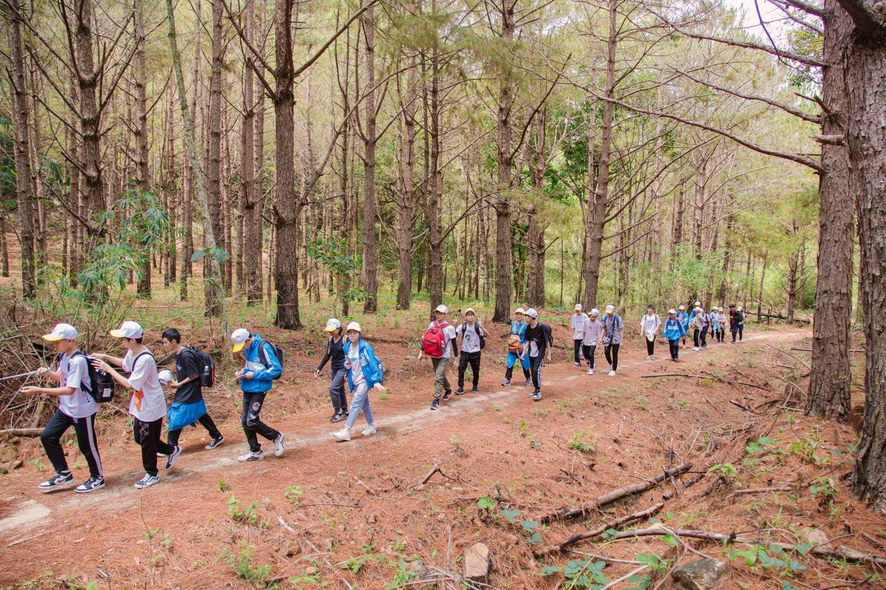
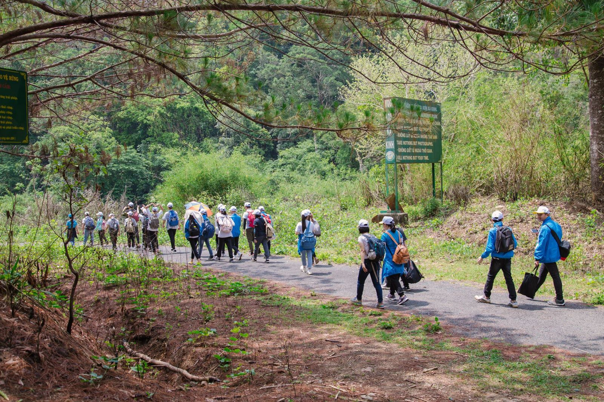
Cả đoàn vừa đi vừa quan sát và dừng chân học về các loại cây có giá trị chữa bệnh, chữa lành vết thương; quan sát các mối quan hệ cộng sinh, hội sinh, kí sinh…của sinh vật. Sự đa dạng của côn trùng và các loài có cánh tạo ra không gian hết sức trong lành giữa buổi trưa nắng đẹp.
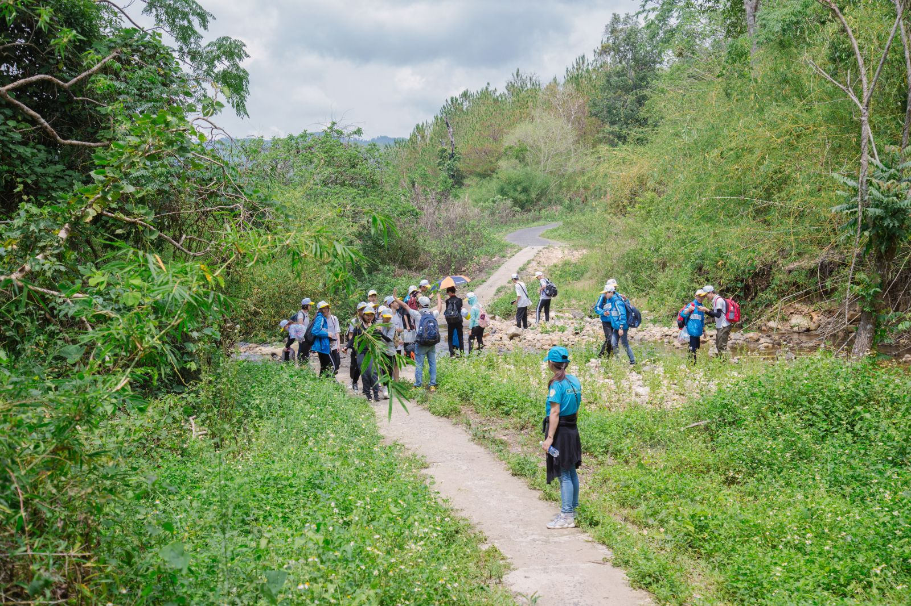
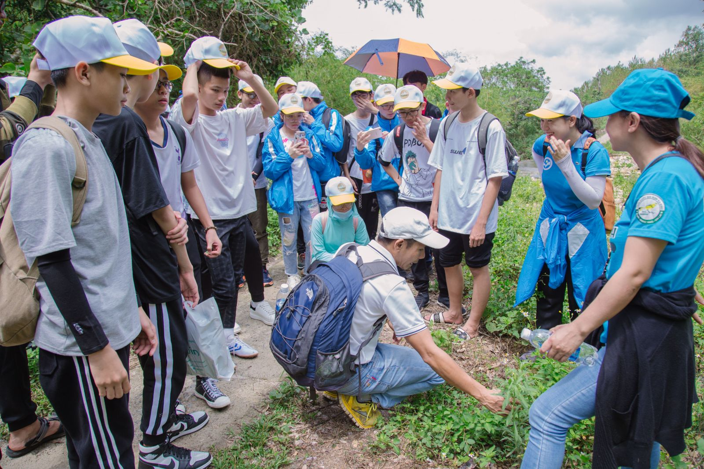
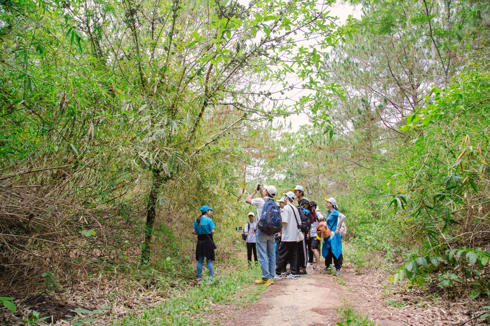
Trước khi dừng chân cạnh 1 con suối để nghỉ trưa, cả đoàn đã có cơ hội chụp hình với cây đa cổ thụ với bộ rễ độc nhất vô nhị.
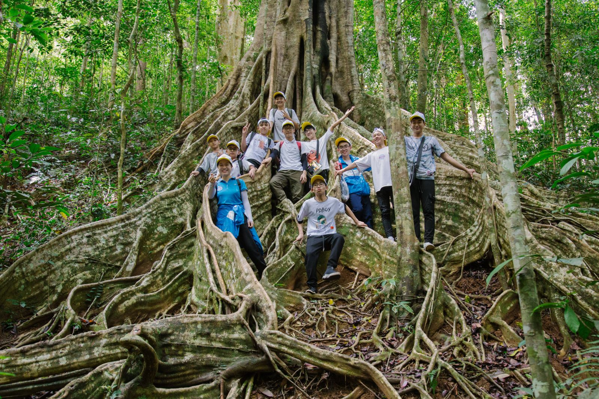
Vừa nghỉ mát dưới bóng cây rợp gió, các em học sinh có cơ hội rèn luyện các kỹ năng về dựng lều (trại), cách thắt dây, chọn hướng…
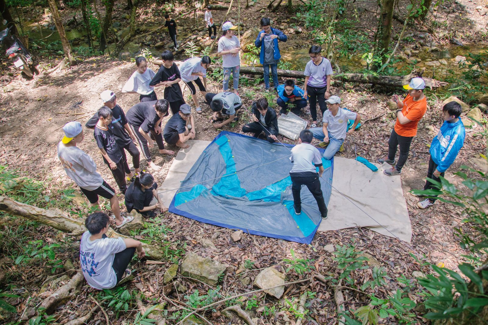
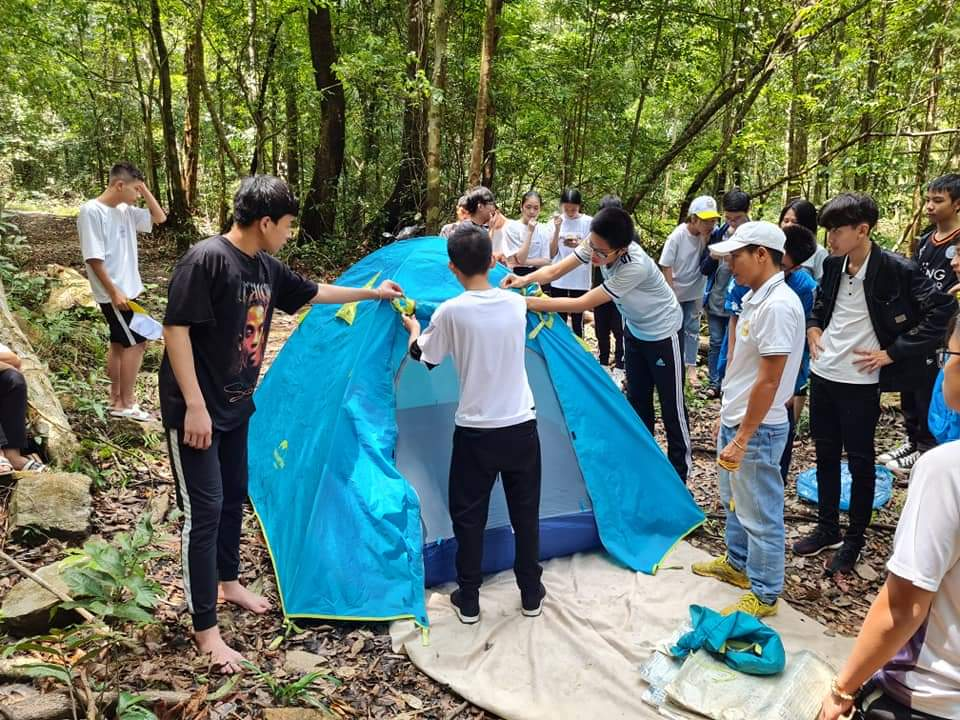
Thú vị nhất, vẫn là được hòa mình vào dòng suối mát và chuẩn bị bữa ăn theo phong cách BBQ (cuộc liên hoan ngoài trời với gà nướng và heo quay bánh hỏi).
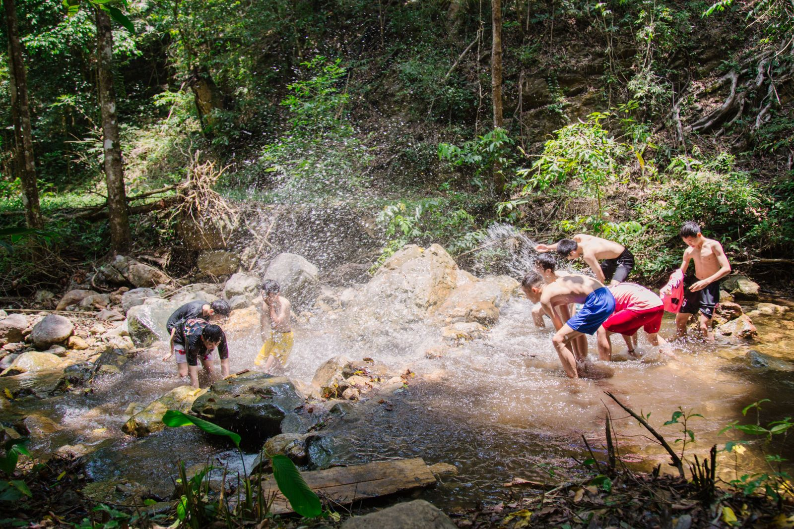
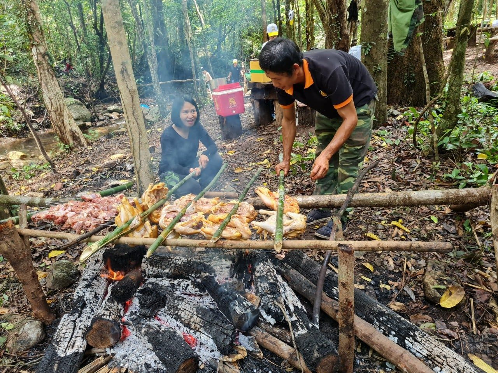
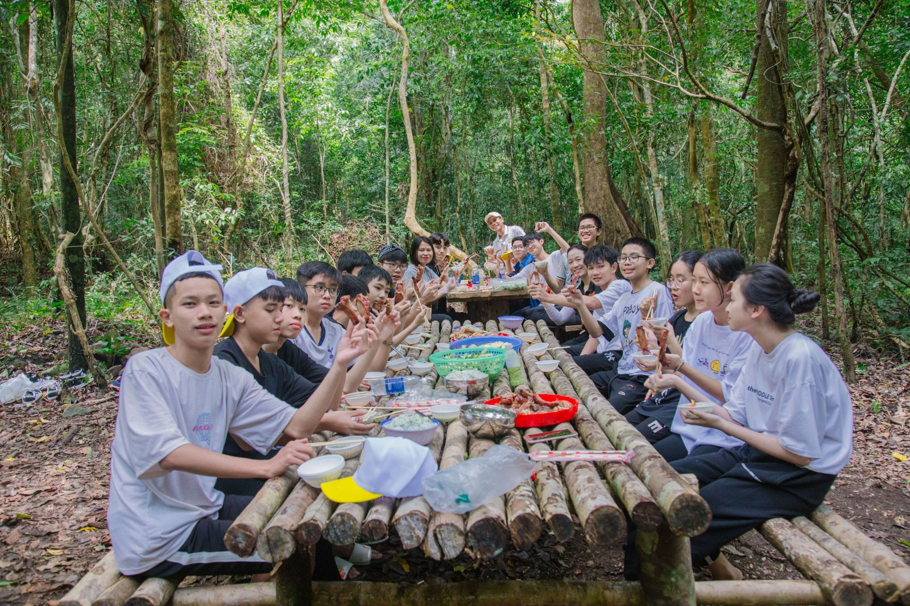
Trời dần chuyển mưa giông, cả đoàn nhanh chóng thu xếp ra khỏi rừng mà không để lại bất cứ 1 rác thải nào. Trên đường trở ngược ra khỏi rừng, các bạn học sinh vừa đi vừa nghỉ chân và tiếp tục học những bài học thú vị về kỹ năng xác định phương hướng, kỹ năng tìm nước uống khi bị lạc giữa rừng; kỹ năng quan sát và phân biệt các loại cây như tre, lồ ô, nấm ... Ra khỏi rừng, chúng tôi bắt gặp 1 khẩu hiệu như lời nhắn nhủ của rừng Konkakinh:
“Không để lại gì ngoài những dấu chân
Không lấy gì ngoài những tấm ảnh
Không giết gì ngoài thời gian”
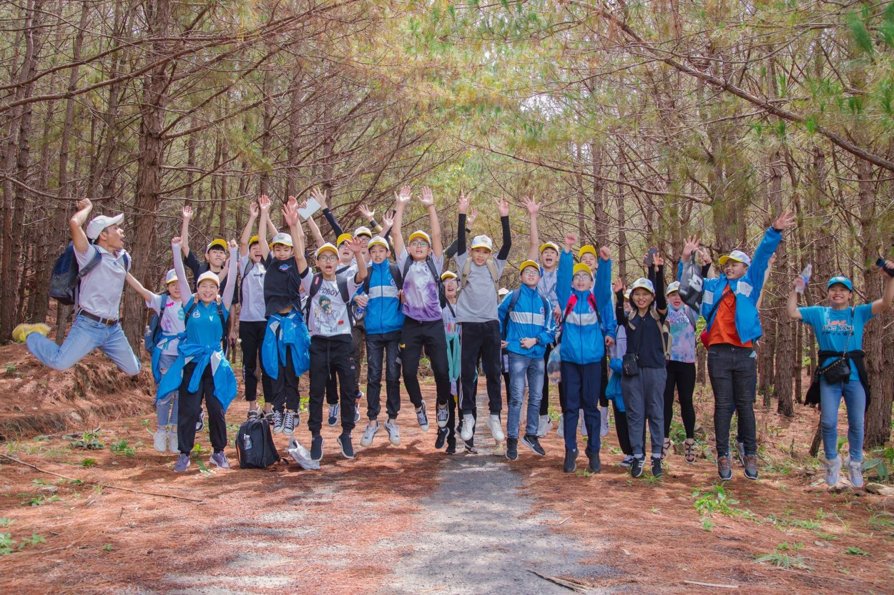
Chuyến đi học tập – trải nghiệm của học sinh Trường TH, THCS & THPT Sao Việt đã khép lại, nhưng trong tâm trí của mỗi bạn học sinh có lẽ dư âm của hành trình còn đọng mãi. Dư âm ấy mở ra, khơi dậy nhiệt huyết, khát vọng cống hiến, niềm tin về sự đổi mới, tiến bộ! Trên hành trình tiếp thu tri thức, kinh nghiệm, những chuyến đi thực tế này sẽ mãi là hành trang để các bạn học sinh tu dưỡng, rèn luyện, cố gắng phấn đấu cho sự nghiệp học chữ và học làm người.